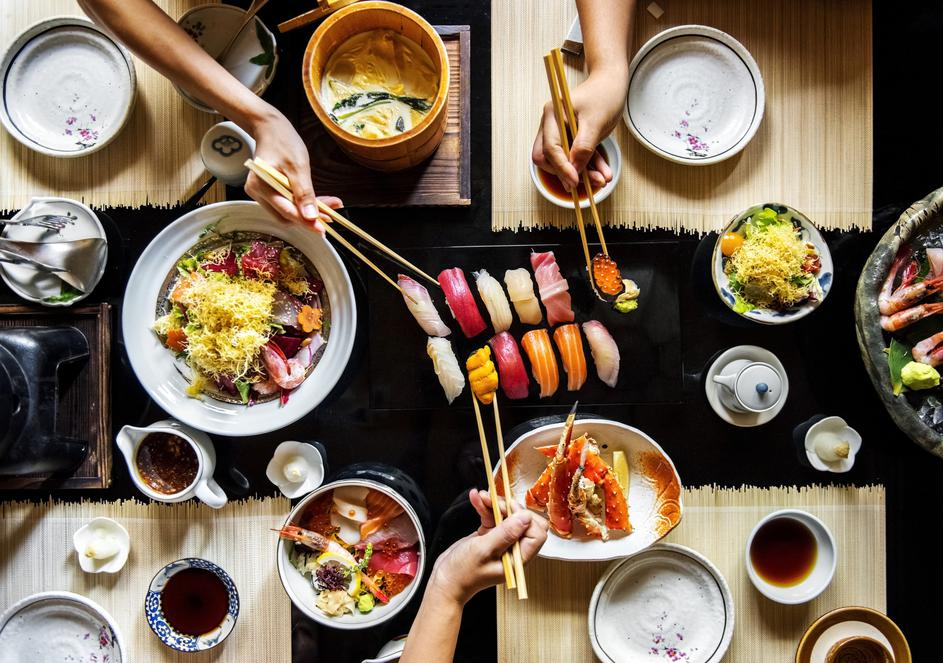

Što je sushi?
Mnogi gurmani i ljubitelji dobrog zalogaja čuli su za slavno tradicionalno japansko jelo pod nazivom sushi.
Iako je konzumacija sushija u našim krajevima umjereno zastupljena, vani su blagodati i nutritivne vrijednosti sushija itekako poznate. Iz godine u godinu broj konzumenata sushija u Hrvatskoj raste, a glavni razlozi zašto se ovo jelo češće ne nađe na našim tanjurima su nedovoljno nepoznavanje zdravstvenih benefita sushija i viša cijena. Poznato japansko jelo konzumira se kao glavno jelo i predjelo, iako ga ljudi znaju pripremati u obliku deserta.
Prehrana koja uključuje sushi jela definira se kao laganija prehrana i idealna je za održavanje tjelesne mase budući da je sushi niskokalorično jelo. Može se kombinirati s raznovrsnim namirnicama poput povrća, kozica, piletine, a službena definicija sushija kaže da je to jelo koje se priprema od ribe, posebne sushi riže, povrća, a obavijen je nori algama. Sushi se jede štapićima najčešće uz poznati soja umak,japansko pivo ili sake.
Što je Sushi Site?
Sushi site je izrađen od strane entuzijasta sushija kao usluga koja će pružiti dostavu sushija, ali i informacije o njima Preko sushi sitea možete vidjeti različite vrste sushija, njihovu cijenu na tržištu/različitim restoranima i njihove sastojke. Napravljen je da bi olakšao potražnju i raspitivanje o sushijima, naša usluga čak i ima link za recepte i kako da vi sami napravite svoj sushi!